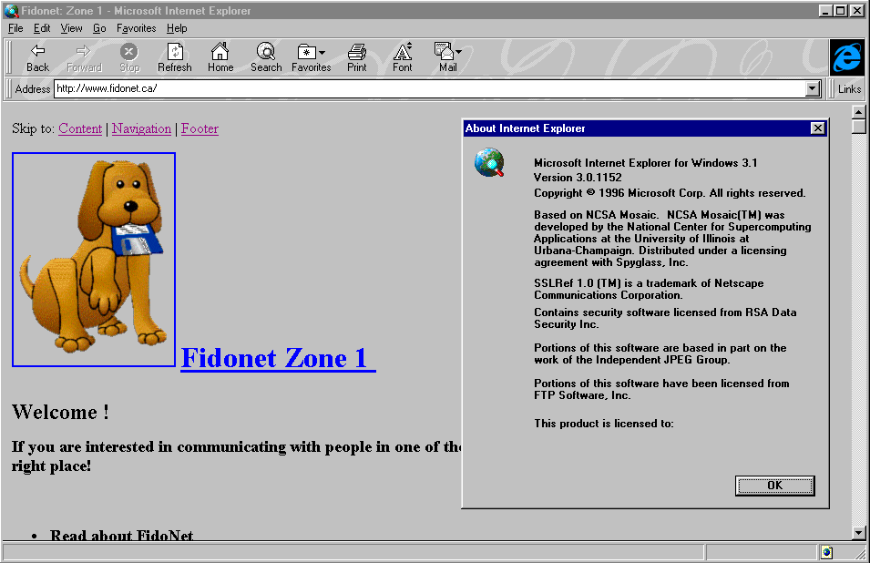

- The World Wide Web as we know it was "invented" in 1989 at CERN by Tim Berners-Lee, a British scientist who reimagined the user-side functionality of the early internet. In 1991, Berners-Lee was also the first to build a "web" browser: WorldWideWeb (later renamed Nexus).
- In 1993 came Mosaic, a browser that could display text and images together, designed for use by anyone-not just the highly technical and/or academic crowd the Internet catered to prior to this point. Mosaic was created by the University of Illinois' National Center for Supercomputing Applications and was embraced by users across the globe.
- Built by many of the same people that created Mosaic, Netscape Navigator came onto the scene in 1994. (Do you remember this one? We sure do.) Included in this browser's many advancements was its design for the speed of dial-up modems common in private households. Early Internet adopters often used the phrase "Best if viewed in Netscape" on their websites, and many of us followed suit.
- Also in 1994 came Opera, which is particularly impressive since this is a browser still going strong today (a rare longevity in the web world).
- While Internet Explorer (IE) had earlier versions, such as the original that launched fully integrated with Windows 95 operating systems, it was IE 3, which arrived in 1996, that started a shift in browser dominance. It supported multimedia applications and Internet mail among many new features. With the weight of Microsoft behind it, Internet Explorer quickly became a force, becoming the leading browser by 1999. 
- Steve Jobs introduced Apple's first web browser, Safari, in 2003, which became included with all OS X operating systems.
- IE in many ways killed Netscape, but it found a major competitor with the launch of Firefox in 2004. Built by Netscape Navigator spin-off, Mozilla, Firefox started changing the landscape of web browsers into the competitive space we now know today. Open-source at its core, Firefox was an answer to both those who found Internet Explorer imperfect and those who feared its level of privacy.
- In January 2005, web browser market share was divided largely between Internet Explorer (74.5%), Firefox (16.6%), Mozilla (3.4%), Opera (1.9%), and Netscape (1.1%).
- The launch of Chrome in 2008 marked Google's entrance into web browsers. Google releases the majority of Chrome's source code in an open-source project named "Chromium."
- By 2012, Chrome became the most popular web browser. The breakdown was Chrome (46.9%), Firefox (14.7%), Internet Explorer (31.1%), Safari (4.2%), and Opera (2.1%).
- 2015 sees the entrance of Microsoft's Edge (formerly referred to as Project Spartan), the long-overdue replacement for IE, as well as Vivaldi, created by a co-founder and former CEO of Opera.
- Currently, Chrome is by far the most popular web browser. The breakdown for 2019 is Chrome (80.3%), Firefox (9.6%), Edge/IE (3.6%), Safari (3.3%), and Opera (1.7%).